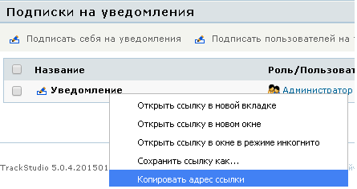

|
<< Click to Display Table of Contents >> Navigation: Rus > Руководство разработчика > Как писать скрипты и триггеры в TrackStudio > Альтернативная реализация механизма рассылки |
Сделать отчет о состоянии задач для пользователя позволяет стандартный механизм "Подписки на уведомления".
Но с его помощью нельзя настроить четкое расписание для рассылки из-за использования привязки к интервалам.
В случае когда рассылка должна уходить в определенное время нужно использовать следующий способ.
•Создать подписку на уведомления для пользователей.
•Теперь нужно перейти в "Подписки на уведомления" и скопировать ссылку. (Навести курсор на название нужной рассылки и нажать "Копировать адрес ссылки")

Из ссылки нужно взять subscriptionId, который будет использован в schedule скрипте.
http://localhost:8888/TrackStudio/TaskSubscribeViewAction.do&method=page&id=4028808a19512fa5011951d9cbdb0070&subscriptionId=8a80828f4b020277014b022671920003
•Откомпилированный schedule-скрипт, отсылающий рассылку по настроенному расписанию, положить в /etc/plugins/scripts/scheduler
package scripts.scheduler;
import com.trackstudio.app.adapter.AdapterManager;
import com.trackstudio.external.IGeneralScheduler;
import org.apache.commons.logging.Log;
import org.apache.commons.logging.LogFactory;
public class ReportScheduler implements IGeneralScheduler {
private static final Log LOGGER = LogFactory.getLog(ReportScheduler.class);
@Override
public String getCronTime() {
//execute every month by first day
return "0 0 0 1 * ?";
}
@Override
public String getName() {
return "This scheduler executes the subscription by every month";
}
@Override
public String execute() throws Exception {
String subscriptionId = "8a80828f4b020277014b022671920003";
AdapterManager.getInstance().getFilterNotifyAdapterManager()
.processSubscription(subscriptionId, null, false);
return "OK";
}
@Override
public boolean isUse() {
return true;
}
}